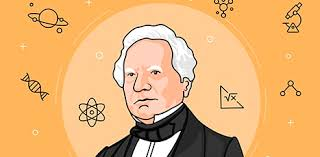
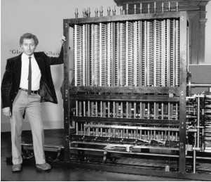

Origen de la programacion
Para hablar del origen de la programación nos tenemos que remontar hasta 1801, año en el que Joseph Marie Jacquard inventó el primer sistema de programación: un programa introducido en un telar que leía el código y permitía tejer unas figuras determinas.
En 1833, treinta años después, Charles Babbage crea la conocida como máquina diferencial, capaz de resolver no solo sumas y restas, sino también ecuaciones. Fue en 1957 cuando el conocido científico John W. Backus creó Fortran, el primer lenguaje de programación conocido que tenía como fin realizar cálculos numéricos y científicos de manera eficiente.
Más tarde, en 1964, apareció BASIC, una herramienta de apoyo enfocada a la educación que continúa utilizándose hoy en día en algunas herramientas.